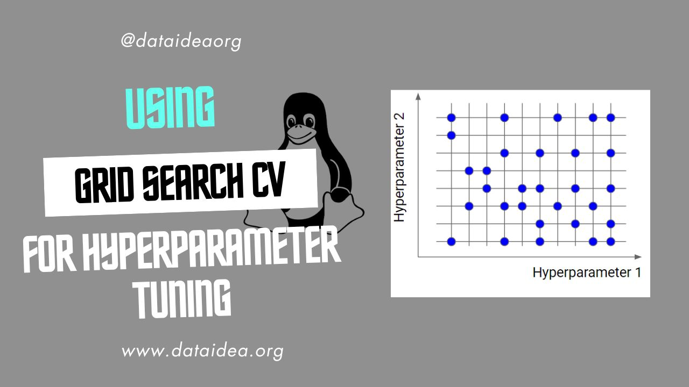

What is GridSearchCV
GridSearchCV is a method in the scikit-learn library, which is a popular machine learning library in Python. It’s used for hyperparameter optimization, which involves searching for the best set of hyperparameters for a machine learning model. In this notebook, we’ll learn:
- how to setup a proper GridSearchCV and
- how to use it for hyperparameter optimization.
Before we get started, if you want to be among the first to hear about future updates of the course materials, simply enter your email below, follow us on (formally Twitter), or subscribe to our YouTube channel.
Let’s import some packages
We begin by importing necessary packages and modules. The KNeighborsRegressor model is imported from the sklearn.neighbors module. KNN regression is a non-parametric method that, in an intuitive manner, approximates the association between independent variables and the continuous outcome by averaging the observations in the same neighbourhood. Read more about the KNN Regressor from this link
# Let's import some packages
import pandas as pd
import numpy as np
import matplotlib.pyplot as plt
import dataidea as di
from sklearn.neighbors import KNeighborsRegressorLet’s import necessary components from sklearn
We import essential components from sklearn, including Pipeline, which we’ll use to create a pipe as from the previous section, ColumnTransformer, StandardScaler, and OneHotEncoder which we’ll use to transform the numeric and categorical columns respectively to be good for modelling.
# lets import the Pipeline from sklearn
from sklearn.pipeline import Pipeline
from sklearn.compose import ColumnTransformer
from sklearn.preprocessing import StandardScaler
from sklearn.preprocessing import OneHotEncoderLoading the dataset
We load the dataset named boston using the loadDataset function, which is inbuilt in the dataidea package. The loaded dataset is stored in the variable data.
# loading the data set
data = di.loadDataset('boston')# looking at the top part
data.head()| CRIM | ZN | INDUS | CHAS | NOX | RM | AGE | DIS | RAD | TAX | PTRATIO | B | LSTAT | MEDV | |
|---|---|---|---|---|---|---|---|---|---|---|---|---|---|---|
| 0 | 0.00632 | 18.0 | 2.31 | 0 | 0.538 | 6.575 | 65.2 | 4.0900 | 1 | 296.0 | 15.3 | 396.90 | 4.98 | 24.0 |
| 1 | 0.02731 | 0.0 | 7.07 | 0 | 0.469 | 6.421 | 78.9 | 4.9671 | 2 | 242.0 | 17.8 | 396.90 | 9.14 | 21.6 |
| 2 | 0.02729 | 0.0 | 7.07 | 0 | 0.469 | 7.185 | 61.1 | 4.9671 | 2 | 242.0 | 17.8 | 392.83 | 4.03 | 34.7 |
| 3 | 0.03237 | 0.0 | 2.18 | 0 | 0.458 | 6.998 | 45.8 | 6.0622 | 3 | 222.0 | 18.7 | 394.63 | 2.94 | 33.4 |
| 4 | 0.06905 | 0.0 | 2.18 | 0 | 0.458 | 7.147 | 54.2 | 6.0622 | 3 | 222.0 | 18.7 | 396.90 | 5.33 | 36.2 |
Reveal more about the Boston dataset
The Boston Housing Dataset is a derived from information collected by the U.S. Census Service concerning housing in the area of Boston MA. The following describes the dataset columns:
- CRIM - per capita crime rate by town
- ZN - proportion of residential land zoned for lots over 25,000 sq.ft.
- INDUS - proportion of non-retail business acres per town.
- CHAS - Charles River dummy variable (1 if tract bounds river; 0 otherwise)
- NOX - nitric oxides concentration (parts per 10 million)
- RM - average number of rooms per dwelling
- AGE - proportion of owner-occupied units built prior to 1940
- DIS - weighted distances to five Boston employment centres
- RAD - index of accessibility to radial highways
- TAX - full-value property-tax rate per $10,000
- PTRATIO - pupil-teacher ratio by town
- B - 1000(Bk - 0.63)^2 where Bk is the proportion of blacks by town
- LSTAT - % lower status of the population
- MEDV - Median value of owner-occupied homes in $1000’s
Selecting features (X) and target variable (y)
We separate the features (X) from the target variable (y). Features are stored in X, excluding the target variable ‘MEDV’, which is stored in y.
# Selecting our X set and y
X = data.drop('MEDV', axis=1)
y = data.MEDVDefining numeric and categorical columns
We define lists of column names representing numeric and categorical features in the dataset. We identified these columns as the best features from the previous section of this week. Click here to learn about feature selection
# numeric columns
numeric_cols = [
'INDUS', 'NOX', 'RM',
'TAX', 'PTRATIO', 'LSTAT'
]
# categorical columns
categorical_cols = ['CHAS', 'RAD']Preprocessing steps
We define transformers for preprocessing numeric and categorical features. StandardScaler is used for standardizing numeric features, while OneHotEncoder is used for one-hot encoding categorical features. These transformers are applied to respective feature types using ColumnTransformer as we learned in the previous section.
# Preprocessing steps
numeric_transformer = StandardScaler()
categorical_transformer = OneHotEncoder(handle_unknown='ignore')
# Combine preprocessing steps
column_transformer = ColumnTransformer(
transformers=[
('numeric', numeric_transformer, numeric_cols),
('categorical', categorical_transformer, categorical_cols)
])Defining the pipeline
We construct a machine learning pipeline using Pipeline. The pipeline consists of preprocessing steps (defined in column_transformer) and a KNeighborsRegressor model with 10 neighbors. Learn about Machine Learning Pipelining here
# Pipeline
pipe = Pipeline([
('column_transformer', column_transformer),
('model', KNeighborsRegressor(n_neighbors=10))
])
pipePipeline(steps=[('column_transformer',
ColumnTransformer(transformers=[('numeric', StandardScaler(),
['INDUS', 'NOX', 'RM', 'TAX',
'PTRATIO', 'LSTAT']),
('categorical',
OneHotEncoder(handle_unknown='ignore'),
['CHAS', 'RAD'])])),
('model', KNeighborsRegressor(n_neighbors=10))])
In a Jupyter environment, please rerun this cell to show the HTML representation or trust the notebook. On GitHub, the HTML representation is unable to render, please try loading this page with nbviewer.org.
Pipeline(steps=[('column_transformer',
ColumnTransformer(transformers=[('numeric', StandardScaler(),
['INDUS', 'NOX', 'RM', 'TAX',
'PTRATIO', 'LSTAT']),
('categorical',
OneHotEncoder(handle_unknown='ignore'),
['CHAS', 'RAD'])])),
('model', KNeighborsRegressor(n_neighbors=10))])
ColumnTransformer(transformers=[('numeric', StandardScaler(),
['INDUS', 'NOX', 'RM', 'TAX', 'PTRATIO',
'LSTAT']),
('categorical',
OneHotEncoder(handle_unknown='ignore'),
['CHAS', 'RAD'])])
['INDUS', 'NOX', 'RM', 'TAX', 'PTRATIO', 'LSTAT']
StandardScaler()
['CHAS', 'RAD']
OneHotEncoder(handle_unknown='ignore')
KNeighborsRegressor(n_neighbors=10)
Fitting the pipeline
As we learned, the Pipeline has the fit, score and predict methods which we use to fit on the dataset (X, y) and evaluate the model’s performance using the score() method, finally making predictions.
# Fit the pipeline
pipe.fit(X, y)
# Score the pipeline
pipe_score = pipe.score(X, y)
# Predict using the pipeline
pipe_predicted_y = pipe.predict(X)
print('Pipe Score:', pipe_score)Pipe Score: 0.818140222027107Hyperparameter tuning using GridSearchCV
We perform hyperparameter tuning using GridSearchCV. The pipeline (pipe) serves as the base estimator, and we define a grid of hyperparameters to search through.
For this demonstration, we will focus on the number of neighbors for the KNN model.
from sklearn.model_selection import GridSearchCVmodel = GridSearchCV(
estimator=pipe,
param_grid={
'model__n_neighbors': [1, 2, 3, 4, 5, 6, 7, 8, 9, 10]
},
cv=3
)Fitting the model for hyperparameter tuning
We fit the GridSearchCV model on the dataset to find the optimal hyperparameters. This involves preprocessing the data and training the model multiple times using cross-validation.
model.fit(X, y)GridSearchCV(cv=3,
estimator=Pipeline(steps=[('column_transformer',
ColumnTransformer(transformers=[('numeric',
StandardScaler(),
['INDUS',
'NOX',
'RM',
'TAX',
'PTRATIO',
'LSTAT']),
('categorical',
OneHotEncoder(handle_unknown='ignore'),
['CHAS',
'RAD'])])),
('model',
KNeighborsRegressor(n_neighbors=10))]),
param_grid={'model__n_neighbors': [1, 2, 3, 4, 5, 6, 7, 8, 9, 10]})
In a Jupyter environment, please rerun this cell to show the HTML representation or trust the notebook. On GitHub, the HTML representation is unable to render, please try loading this page with nbviewer.org.
GridSearchCV(cv=3,
estimator=Pipeline(steps=[('column_transformer',
ColumnTransformer(transformers=[('numeric',
StandardScaler(),
['INDUS',
'NOX',
'RM',
'TAX',
'PTRATIO',
'LSTAT']),
('categorical',
OneHotEncoder(handle_unknown='ignore'),
['CHAS',
'RAD'])])),
('model',
KNeighborsRegressor(n_neighbors=10))]),
param_grid={'model__n_neighbors': [1, 2, 3, 4, 5, 6, 7, 8, 9, 10]})
Pipeline(steps=[('column_transformer',
ColumnTransformer(transformers=[('numeric', StandardScaler(),
['INDUS', 'NOX', 'RM', 'TAX',
'PTRATIO', 'LSTAT']),
('categorical',
OneHotEncoder(handle_unknown='ignore'),
['CHAS', 'RAD'])])),
('model', KNeighborsRegressor(n_neighbors=10))])
ColumnTransformer(transformers=[('numeric', StandardScaler(),
['INDUS', 'NOX', 'RM', 'TAX', 'PTRATIO',
'LSTAT']),
('categorical',
OneHotEncoder(handle_unknown='ignore'),
['CHAS', 'RAD'])])
['INDUS', 'NOX', 'RM', 'TAX', 'PTRATIO', 'LSTAT']
StandardScaler()
['CHAS', 'RAD']
OneHotEncoder(handle_unknown='ignore')
KNeighborsRegressor(n_neighbors=10)
Extracting and displaying cross-validation results
We extract the results of cross-validation performed during hyperparameter tuning and present them in a tabular format using a DataFrame.
cv_results = pd.DataFrame(model.cv_results_)
cv_results| mean_fit_time | std_fit_time | mean_score_time | std_score_time | param_model__n_neighbors | params | split0_test_score | split1_test_score | split2_test_score | mean_test_score | std_test_score | rank_test_score | |
|---|---|---|---|---|---|---|---|---|---|---|---|---|
| 0 | 0.006702 | 0.003290 | 0.003588 | 0.000087 | 1 | {’model__n_neighbors’: 1} | 0.347172 | 0.561780 | 0.295295 | 0.401415 | 0.115356 | 10 |
| 1 | 0.004681 | 0.000273 | 0.003889 | 0.000292 | 2 | {’model__n_neighbors’: 2} | 0.404829 | 0.612498 | 0.276690 | 0.431339 | 0.138369 | 9 |
| 2 | 0.005089 | 0.000512 | 0.003540 | 0.000681 | 3 | {’model__n_neighbors’: 3} | 0.466325 | 0.590333 | 0.243375 | 0.433345 | 0.143552 | 8 |
| 3 | 0.004812 | 0.000723 | 0.003431 | 0.000099 | 4 | {’model__n_neighbors’: 4} | 0.569672 | 0.619854 | 0.246539 | 0.478688 | 0.165428 | 4 |
| 4 | 0.004633 | 0.000316 | 0.003406 | 0.000133 | 5 | {’model__n_neighbors’: 5} | 0.613900 | 0.600994 | 0.230320 | 0.481738 | 0.177857 | 2 |
| 5 | 0.004805 | 0.000379 | 0.003908 | 0.000318 | 6 | {’model__n_neighbors’: 6} | 0.620587 | 0.607083 | 0.225238 | 0.484302 | 0.183269 | 1 |
| 6 | 0.004646 | 0.000606 | 0.003733 | 0.000206 | 7 | {’model__n_neighbors’: 7} | 0.639693 | 0.583685 | 0.218612 | 0.480663 | 0.186704 | 3 |
| 7 | 0.005043 | 0.000516 | 0.003801 | 0.000189 | 8 | {’model__n_neighbors’: 8} | 0.636143 | 0.567841 | 0.209472 | 0.471152 | 0.187125 | 5 |
| 8 | 0.004495 | 0.000117 | 0.003897 | 0.000195 | 9 | {’model__n_neighbors’: 9} | 0.649335 | 0.542624 | 0.197917 | 0.463292 | 0.192639 | 6 |
| 9 | 0.004543 | 0.000164 | 0.003654 | 0.000323 | 10 | {’model__n_neighbors’: 10} | 0.653370 | 0.535112 | 0.191986 | 0.460156 | 0.195674 | 7 |
Reveal the interpretation of the CV results
These are the results of a grid search cross-validation performed on our pipeline (pipe). Let’s break down each column:
mean_fit_time: The average time taken to fit the estimator on the training data across all folds.std_fit_time: The standard deviation of the fitting time across all folds.mean_score_time: The average time taken to score the estimator on the test data across all folds.std_score_time: The standard deviation of the scoring time across all folds.param_model__n_neighbors: The value of then_neighborsparameter of the KNeighborsRegressor model in our pipeline for this particular grid search iteration.params: A dictionary containing the parameters used in this grid search iteration.split0_test_score,split1_test_score,split2_test_score: The test scores obtained for each fold of the cross-validation. Each fold corresponds to one entry here.mean_test_score: The average test score across all folds.std_test_score: The standard deviation of the test scores across all folds.rank_test_score: The rank of this model configuration based on the mean test score. Lower values indicate better performance.
These results allow you to compare different parameter configurations and select the one that performs best based on the mean test score and other relevant metrics.
From the results above, it appears that the best number of neighbors to is 6.
From now on, I would like you to consider a GridSearchCV whenever you want to build a machine learning model.
Congratulations!
If you reached here, you have learned the following:
- Selecting Features
- Preprocessing data
- Creating a Machine Learning Pipeline
- Creating a GridSearchCV
- Using the GridSearchCV to find the best Hyperparameters for our Machine Learning model.
What do you think? Put it in the comments below!
To be among the first to hear about future updates of the course materials, simply enter your email below, follow us on (formally Twitter), or subscribe to our YouTube channel.